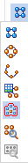
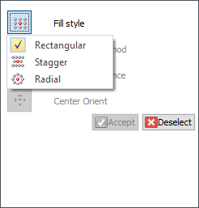

Fill pattern

The Fill Pattern command creates a pattern of a selected feature(s) that completely fills a defined region(s). The fill pattern can be rectangular, staggered, or radial. Each fill pattern type has a set of options to define the pattern array. You can suppress occurrences manually or with a pattern boundary offset value. You can edit fill patterns to produce the desired result.
Fill pattern types

Fill Patterning workflow
-
Select feature(s) to pattern.
-
Choose Home tab→Pattern group→Rectangular pattern list→Fill Pattern.
-
Click region to pattern fill.
-
Press Enter, click , or right-click to place the pattern fill preview.
-
On the Fill Pattern command bar, select the pattern fill type. Rectangular fill is the default.
-
On the command bar, set the desired pattern options.
-
The origin of the feature(s) to pattern defaults to the centroid. Using the steering wheel, you can modify the origin, define the direction of the first pattern row and edit the spacing values. You can also click the Edit Profile handle to modify the pattern region.
-
Right-click or click to place the fill pattern.
-
Left-click or press Escape to end the Fill Pattern command.
How do I
Construct a fill pattern featureLook up more details
Fill Pattern commandFill Pattern command bar